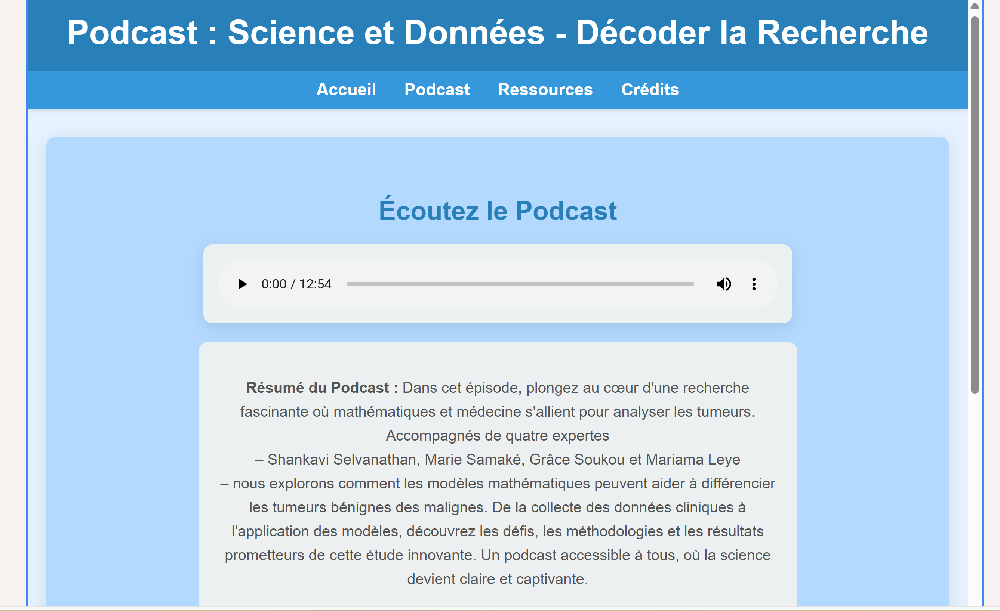
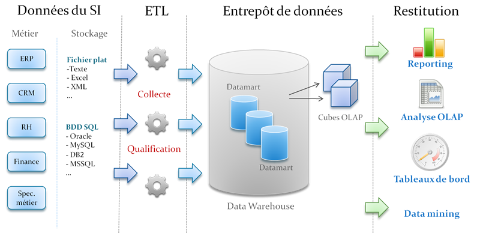
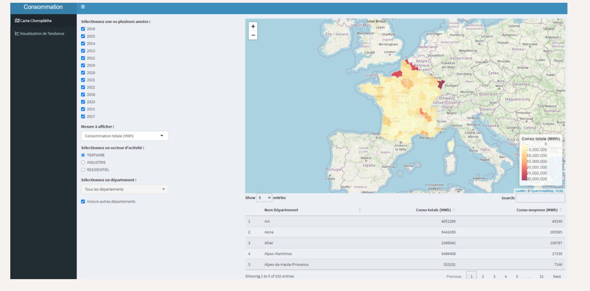
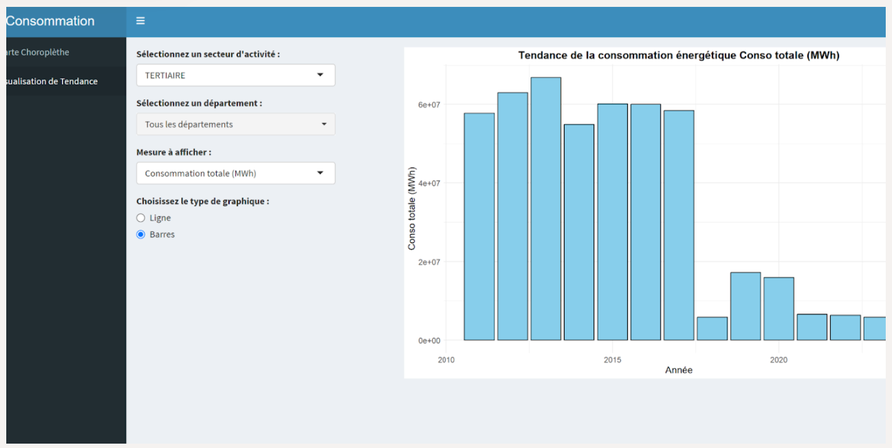

🎙️ SAE – Vulgarisation d'une SAE scientifique en podcast
📝 Contexte de la SAE
Dans le cadre de la ressource Communication, nous devions vulgariser une SAE scientifique de notre choix pour la rendre accessible à un large public. Avec mon groupe, nous avons choisi de travailler sur la SAE portant sur l'analyse des tumeurs via des modèles statistiques. Nous avons opté pour un format original et engageant : le podcast.
📌 Niveau au préalable
Je n'avais encore jamais vulgarisé de contenu scientifique de cette manière, et c'était aussi ma première expérience en conception de contenu audio.
💡 Éléments déclencheurs
La complexité du sujet traité en statistique nous a poussés à chercher comment le rendre compréhensible à tous. C'est ce qui a motivé notre choix du podcast : un format oral, fluide, accessible, permettant d'expliquer sans simplifier à l'excès.
✅ Compétences mobilisées
- Traduction d'un langage scientifique vers un langage courant
- Travail d'équipe : rédaction, enregistrement, écoute mutuelle
- Communication orale : ton, rythme, structure claire du message
- Utilisation d'outils numériques : hébergement web et intégration du podcast
🧠 Prises de conscience
- La vulgarisation est un vrai travail d'équilibre : rester fidèle au fond tout en allégeant la forme
- S'adresser à un public non spécialiste nécessite d'anticiper ses questions
📈 Bonnes pratiques acquises
- Reformuler des concepts techniques de façon claire et concise
- Structurer un message audio fluide et compréhensible
- Coordonner un travail collaboratif créatif et technique
⚠️ Points de vigilance
- Trouver un ton juste entre sérieux et accessibilité
- Limiter les termes techniques non expliqués
🚧 Work in progress
- Améliorer mes compétences en design sonore et édition audio
- Travailler sur ma diction et mon aisance à l'oral
- Approfondir les techniques de vulgarisation scientifique
🎯 Conclusion
Cette SAE en communication a été une excellente passerelle entre mes compétences techniques et ma capacité à transmettre clairement. Le podcast m'a permis de donner vie à un projet scientifique et de développer mes compétences en vulgarisation, en travail d'équipe et en expression orale.

📊 Évaluation des compétences
📂 Importer mes travaux
🧩 SAE – Expérience Professionnelle : Apprentissage des Systèmes d'Information Décisionnels (SID)
📝 Contexte de la SAE
Réalisée au semestre 3 dans le cadre de ma deuxième année de BUT, cette SAE portait sur la découverte et la mise en pratique des Systèmes d'Information Décisionnels (SID). Elle m'a permis d'acquérir des compétences en modélisation de données, en processus ETL, en requêtage SQL, ainsi qu'en visualisation décisionnelle avec Power BI, à travers une approche complète de la Business Intelligence.
📌 Niveau au préalable
Avant cette SAE, je connaissais les bases du langage SQL et j'avais déjà travaillé avec des bases de données relationnelles, mais je n'avais jamais manipulé de processus ETL ni d'outils décisionnels comme SSIS.
💡 Éléments déclencheurs
Le moment déclencheur a été l'implémentation d'un vrai processus ETL avec SSIS : voir les données brutes se transformer et être exploitées pour créer des tableaux de bord décisionnels m'a fait prendre conscience de l'impact direct de ces outils dans les choix stratégiques en entreprise.
✅ Compétences mobilisées
- Compréhension globale du fonctionnement d'un SID
- Processus ETL avec SSIS
- Manipulation avec SQL Server et T-SQL
- Modélisation en étoile et flocon
- Création de dashboards avec Power BI
- Gestion des dimensions, faits, indicateurs, procédures stockées
🧠 Prises de conscience
- Importance de la qualité et structuration des données
- Impact stratégique de l'ETL
- Valeur des visualisations dans la prise de décision
📈 Bonnes pratiques acquises
- Packages SSIS robustes
- Requêtes T-SQL optimisées
- Utilisation pro de Power BI
- Structuration d'un entrepôt de données
⚠️ Points de vigilance
- Temps d'adaptation à SSIS
- Difficulté à modéliser en étoile/flocon
- Améliorer la rigueur dans les relations entre dimensions/faits
🚧 Work in progress
- Approfondir DAX
- Optimiser les requêtes volumineuses
- Explorer Tableau, Talend, Azure Data Studio
🎯 Conclusion
Cette SAE m'a offert une vision globale et concrète du décisionnel en entreprise, en me dotant d'outils puissants pour la gestion des données. Elle a renforcé mon intérêt pour la BI et m'a préparée à des projets d'analyse et de reporting stratégiques.

📊 Évaluation des compétences
📂 Importer mes travaux
🔌 SAE – Développement d'une application Shiny pour l'analyse de la consommation énergétique
📝 Contexte de la SAE
Dans le cadre de cette SAE réalisée sous R Studio avec le package Shiny, j'ai participé à la conception et au développement d'une application web interactive visant à analyser la consommation d'électricité et de gaz en France (métropole et DROM). Ce projet s'inscrivait dans une logique de data science appliquée à la transition énergétique.
📌 Niveau au préalable
Avant cette SAE, j'avais déjà utilisé R pour l'analyse de données classiques, mais je n'avais encore jamais développé d'application avec Shiny ni intégré de modules géospatiaux.
💡 Éléments déclencheurs
L'un des tournants du projet a été la résolution de problèmes techniques liés aux formats numériques et aux codes géographiques. Comprendre que des erreurs de formatage invisibles pouvaient bloquer tout un affichage a changé ma façon d'aborder le prétraitement.
✅ Compétences mobilisées
Nettoyage et transformation de données hétérogènes (CSV, GeoJSON) · Prétraitement automatique · Création d'une application Shiny interactive · Visualisation dynamique : carte choroplèthe, graphiques de tendance · Analyse exploratoire : pics de consommation, influence des températures · Optimisation de l'application et hébergement sur GitHub
🧠 Prises de conscience
Le nettoyage des données est aussi important que leur analyse. La visualisation interactive change complètement la manière d'explorer un jeu de données. Une bonne ergonomie est essentielle pour que l'utilisateur adopte l'application.
📈 Bonnes pratiques acquises
Créer une application stable et fluide avec Shiny · Appliquer une logique modulaire dans la conception du code · Penser l'analyse en lien avec des facteurs réels : climatiques, économiques, sociaux
⚠️ Points de vigilance
Gestion manuelle nécessaire pour corriger des écarts entre fichiers · Nécessité de prévoir des messages d'erreur et des cas limites
🚧 Work in progress
Approfondir l'usage de leaflet et des bibliothèques cartographiques avancées · Intégrer plus d'analyses temporelles et prédictives · Améliorer l'accessibilité visuelle
🎯 Conclusion
Cette SAE a été une expérience technique et environnementale très enrichissante, qui m'a permis de développer un vrai outil décisionnel et de m'initier aux problématiques de transition énergétique.

🗺️ Carte choroplèthe par département

📊 Graphique de tendance de consommation